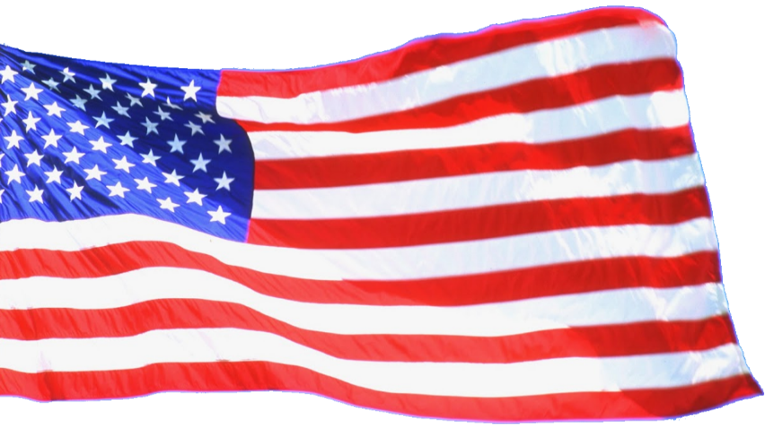
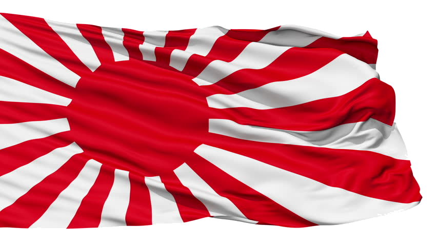

Commanders
- Chester W. Nimitz
- Frank Jack Fletcher
- Raymond A. Spruance
- Yamamoto Isoroku
- Kondou Nobutake
- Nagumo Chuuichi
- Yamaguchi Tamon
09:00 : PBY spots the Occupation Force 500 nautical miles west south-west of Midway, mistakenly reporting this group as the Main Force.
12:30 : Nine B-17s take off for the first of multiple attacks.
15:30 : Later they find Tanaka's transport group and, under heavy AA fire, drop their bombs. No hits are scored.
01:00 : The next morning a PBY scores a torpedo hit on the Akebono Maru, the only successful USN aerial torpedo hit of the battle.
04:30 : Nagumo launches a strike of 36 Aichi D3As, 36 Nakajima B5Ns and 36 A6M2s to attack Midway, and launches 8 search aircraft from Tone. Simultaneously, 10 planes from USS Yorktown begin searching for the Japanese ships.
05:34 : A PBY Catalina from Midway spots the Japanese Carriers.
06:10 : A few Avengers and B-26s attack the IJN Carriers
06:20 : Japanese carrier aircraft bombard Midway. Six F4Fs and 20 F2As along with ground AA shoot down a number of the Japanese planes, although they suffer heavy losses.
07:50 : 67 SBDs dive bombers, 29 torpedo bombers, and 20 F4F Wildcats take off from USS Hornet and USS Enterprise.
07:55 : 16 dive bombers from the Midway Islands attack the carriers
08:10 : 17 B-17s from Midway attack
08:20 : 11 bombers from Midway attack
09:06 : 12 torpedo bombers, 17 dive bombers and 6 Wildcats take off from USS Yorktown.
09:25 : 15 torpedo bombers from Hornet attack
09:30 : 14 torpedo bombers from Enterprise attack
10:00 : 12 torpedo bombers from Yorktown attack
10:25 : 47 dive bombers from the US Carriers attack the Kidou Butai, setting Akagi, Kaga and Soryuu ablaze
11:00 : 18 Aichi D3As and 6 A6M2s take off from Hiryuu
11:30 : 10 planes from Yorktown take off to search for the remaining Japanese ships
12:05 : Hiryuu's aircraft attack Yorktown
13:30 : Hiryuu is spotted by Yorktown's planes; 24 dive bombers take off from Enterprise against Hiryuu
13:31 : 10 B5Ns and 6 A6M2s take off from Hiryuu
13:40 : Yorktown is partially repaired, now making 18 knots
14:30 : Second attack on Yorktown
15:00 : Yorktown is abandoned
16:10 : Soryuu is scuttled
17:00 : Enterprise's carrier aircraft attack Hiryuu
19:25 : Kaga is scutted
05:00 : Akagi is scuttled
09:00 : Hiryuu is scuttled
At about 09:00 on 3 June, Ensign Jack Reid, piloting a PBY from U.S. Navy patrol squadron VP-44,[58] spotted the Japanese Occupation Force 500 nautical miles (580 miles; 930 kilometers) to the west-southwest of Midway. He mistakenly reported this group as the Main Force.[59] Nine B-17s took off from Midway at 12:30 for the first air attack. Three hours later, they found Tanaka's transport group 570 nautical miles (660 miles; 1,060 kilometers) to the west.[60] Under heavy anti-aircraft fire, they dropped their bombs. Although their crews reported hitting four ships,[60] none of the bombs actually hit anything and no significant damage was inflicted.[61] Early the following morning, the Japanese oil tanker Akebono Maru sustained the first hit when a torpedo from an attacking PBY struck her around 01:00. This was the only successful air-launched torpedo attack by the U.S. during the entire battle
At 04:30 on 4 June, Nagumo launched his initial attack on Midway itself, consisting of 36 Aichi D3A dive bombers and 36 Nakajima B5N torpedo bombers, escorted by 36 Mitsubishi A6M Zero fighters. At the same time, he launched his eight search aircraft (one from the heavy cruiser Tone launched 30 minutes late). Japanese reconnaissance arrangements were flimsy, with too few aircraft to adequately cover the assigned search areas, laboring under poor weather conditions to the northeast and east of the task force. As Nagumo's bombers and fighters were taking off, 11 PBYs were leaving Midway to run their search patterns. At 05:34, a PBY reported sighting two Japanese carriers and another spotted the inbound airstrike 10 minutes later.[62]
Midway's radar picked up the enemy at a distance of several miles, and interceptors were scrambled. Unescorted bombers headed off to attack the Japanese carriers, their fighter escorts remaining behind to defend Midway. At 06:20, Japanese carrier aircraft bombed and heavily damaged the U.S. base. Midway-based Marine fighters led by Major Floyd B. Parks, which included six F4Fs and 20 F2As,[63] intercepted the Japanese and suffered heavy losses, though they managed to destroy four B5Ns, as well as a single A6M. Within the first few minutes, two F4Fs and 13 F2As were destroyed, while most of the surviving U.S. planes were damaged, with only two remaining airworthy. American anti-aircraft fire was intense and accurate, destroying three additional Japanese aircraft and damaging many more.[64] Of the 108 Japanese aircraft involved in this attack, 11 were destroyed (including three that ditched), 14 were heavily damaged, and 29 were damaged to some degree. The initial Japanese attack did not succeed in neutralizing Midway: American bombers could still use the airbase to refuel and attack the Japanese invasion force, and most of Midway's land-based defenses were intact. Japanese pilots reported to Nagumo that a second aerial attack on Midway's defenses would be necessary if troops were to go ashore by 7 June.
Having taken off prior to the Japanese attack, American bombers based on Midway made several attacks on the Japanese carrier force. These included six Grumman Avengers, detached to Midway from Hornet's VT-8 (Midway was the combat debut of both VT-8 and the TBF); Marine Scout-Bombing Squadron 241 (VMSB-241), consisting of 11 SB2U-3s and 16 SBDs, plus four USAAF B-26s of the 18th Reconnaissance and 69th Bomb Squadrons armed with torpedoes, and 15 B-17s of the 31st, 72nd, and 431st Bomb Squadrons. The Japanese repelled these attacks, losing three fighters while destroying five TBFs, two SB2Us, eight SBDs, and two B-26s.[66] Among the dead was Major Lofton R. Henderson of VMSB-241, killed while leading his inexperienced Dauntless squadron into action. The main airfield at Guadalcanal was named after him in August 1942.[67] One B-26, after being seriously damaged by anti-aircraft fire, made a suicide run on Akagi. Making no attempt to pull out of its run, the aircraft narrowly missed crashing directly into the carrier's bridge, which could have killed Nagumo and his command staff.[68] This experience may well have contributed to Nagumo's determination to launch another attack on Midway, in direct violation of Yamamoto's order to keep the reserve strike force armed for anti-ship operations
In accordance with Yamamoto's orders for Operation MI, Admiral Nagumo had kept half of his aircraft in reserve. These comprised two squadrons each of dive bombers and torpedo bombers. The dive bombers were as yet unarmed (although this was doctrinal, dive bombers were to be armed on the flight deck). The torpedo bombers were armed with torpedoes should any American warships be located.[70] At 07:15, Nagumo ordered his reserve planes to be re-armed with contact-fused general-purpose bombs for use against land targets. This was a result of the attacks from Midway, as well as of the morning flight leader's recommendation of a second strike. Re-arming had been underway for about 30 minutes when, at 07:40,[71] the delayed scout plane from Tone signaled that it had sighted a sizable American naval force to the east, but neglected to describe its composition. Later evidence suggests Nagumo did not receive the sighting report until 08:00.[72] Nagumo quickly reversed his order to re-arm the bombers with general-purpose bombs and demanded that the scout plane ascertain the composition of the American force. Another 20–40 minutes elapsed before Tone's scout finally radioed the presence of a single carrier in the American force. This was one of the carriers from Task Force 16. The other carrier was not sighted.[73] Nagumo was now in a quandary. Rear Admiral Tamon Yamaguchi, leading Carrier Division 2 (Hiryū and Sōryū), recommended that Nagumo strike immediately with the forces at hand: 18 Aichi D3A1 dive bombers each on Sōryū and Hiryū, and half the ready cover patrol aircraft.[74] Nagumo's opportunity to hit the American ships[75] was now limited by the imminent return of his Midway strike force. The returning strike force needed to land promptly or it would have to ditch into the sea. Because of the constant flight deck activity associated with combat air patrol operations during the preceding hour, the Japanese never had an opportunity to position ("spot") their reserve planes on the flight deck for launch.[76] The few aircraft on the Japanese flight decks at the time of the attack were either defensive fighters or, in the case of Sōryū, fighters being spotted to augment the combat air patrol.[77] Spotting his flight decks and launching aircraft would have required at least 30 minutes.[78] Furthermore, by spotting and launching immediately, Nagumo would be committing some of his reserve to battle without proper anti-ship armament, and likely without fighter escort; indeed, he had just witnessed how easily the unescorted American bombers had been shot down.[79] Japanese carrier doctrine preferred the launching of fully constituted strikes rather than piecemeal attacks. Without confirmation of whether the American force included carriers (not received until 08:20), Nagumo's reaction was doctrinaire.[80] In addition, the arrival of another land-based American air strike at 07:53 gave weight to the need to attack the island again. In the end, Nagumo decided to wait for his first strike force to land, then launch the reserve, which would by then be properly armed with torpedoes.[81] In the final analysis, it made no difference; Fletcher's carriers had launched their planes beginning at 07:00 (with Enterprise and Hornet having completed launching by 07:55, but Yorktown not until 09:08), so the aircraft that would deliver the crushing blow were already on their way. Even if Nagumo had not strictly followed carrier doctrine, he could not have prevented the launch of the American attack
The Americans had already launched their carrier aircraft against the Japanese. Fletcher, in overall command aboard Yorktown, and benefiting from PBY sighting reports from the early morning, ordered Spruance to launch against the Japanese as soon as was practical, while initially holding Yorktown in reserve in case any other Japanese carriers were found.[83] Spruance judged that, though the range was extreme, a strike could succeed and gave the order to launch the attack. He then left Halsey's Chief of Staff, Captain Miles Browning, to work out the details and oversee the launch. The carriers had to launch into the wind, so the light southeasterly breeze would require them to steam away from the Japanese at high speed. Browning therefore suggested a launch time of 07:00, giving the carriers an hour to close on the Japanese at 25 knots (46 km/h; 29 mph). This would place them at about 155 nautical miles (287 km; 178 mi) from the Japanese fleet, assuming it did not change course. The first plane took off from Spruance's carriers Enterprise and Hornet a few minutes after 07:00.[84] Fletcher, upon completing his own scouting flights, followed suit at 08:00 from Yorktown.[85] Fletcher, along with Yorktown's commanding officer, Captain Elliott Buckmaster, and their staffs, had acquired first-hand experience in organizing and launching a full strike against an enemy force in the Coral Sea, but there was no time to pass these lessons on to Enterprise and Hornet which were tasked with launching the first strike.[86] Spruance ordered the striking aircraft to proceed to target immediately, rather than waste time waiting for the strike force to assemble, since neutralizing enemy carriers was the key to the survival of his own task force.[85][86] While the Japanese were able to launch 108 aircraft in just seven minutes, it took Enterprise and Hornet over an hour to launch 117.[87] Spruance judged that the need to throw something at the enemy as soon as possible was greater than the need to coordinate the attack by aircraft of different types and speeds (fighters, bombers, and torpedo bombers). Accordingly, American squadrons were launched piecemeal and proceeded to the target in several different groups. It was accepted that the lack of coordination would diminish the impact of the American attacks and increase their casualties, but Spruance calculated that this was worthwhile, since keeping the Japanese under aerial attack impaired their ability to launch a counterstrike (Japanese tactics preferred fully constituted attacks), and he gambled that he would find Nagumo with his flight decks at their most vulnerable.[85][86] American carrier aircraft had difficulty locating the target, despite the positions they had been given. The strike from Hornet, led by Commander Stanhope C. Ring, followed an incorrect heading of 265 degrees rather than the 240 degrees indicated by the contact report. As a result, Air Group Eight's dive bombers missed the Japanese carriers.[88][89] Torpedo Squadron 8 (VT-8, from Hornet), led by Lieutenant Commander John C. Waldron, broke formation from Ring and followed the correct heading. The 10 F4Fs from Hornet ran out of fuel and had to ditch.[90] Devastators of VT-6 aboard USS Enterprise being prepared for take off during the battle Waldron's squadron sighted the enemy carriers and began attacking at 09:20, followed at 09:40[91] by VF-6 from Enterprise, whose Wildcat fighter escorts lost contact, ran low on fuel, and had to turn back.[90] Without fighter escort, all 15 TBD Devastators of VT-8 were shot down without being able to inflict any damage. Ensign George H. Gay, Jr. was the only survivor of the 30 aircrew of VT-8. VT-6 lost nine of its 14 Devastators (one ditched later), and 10 of 12 Devastators from Yorktown's VT-3 (who attacked at 10:10) were shot down with no hits to show for their effort, thanks in part to the abysmal performance of their unimproved Mark 13 torpedoes.[92] Midway was the last time the TBD Devastator was used in combat.[93] The Japanese combat air patrol, flying Mitsubishi A6M2 Zeros,[94] made short work of the unescorted, slow, under-armed TBDs. A few TBDs managed to get within a few ship-lengths range of their targets before dropping their torpedoes—close enough to be able to strafe the enemy ships and force the Japanese carriers to make sharp evasive maneuvers—but all of their torpedoes either missed or failed to explode.[95] Remarkably, senior Navy and Bureau of Ordnance officers never questioned why half a dozen torpedoes, released so close to the Japanese carriers, produced no results.[96] The performance of American torpedoes in the early months of the war was scandalous, as shot after shot missed by running directly under the target (deeper than intended), prematurely exploded, or hit targets (sometimes with an audible clang) and failed to explode at all.[97][98] Despite their failure to score any hits, the American torpedo attacks achieved three important results. First, they kept the Japanese carriers off balance and unable to prepare and launch their own counterstrike. Second, the poor control of the Japanese combat air patrol (CAP) meant they were out of position for subsequent attacks. Third, many of the Zeros ran low on ammunition and fuel.[99] The appearance of a third torpedo plane attack from the southeast by VT-3 from Yorktown at 10:00 very quickly drew the majority of the Japanese CAP to the southeast quadrant of the fleet.[100] Better discipline and the employment of a greater number of Zeroes for the CAP might have enabled Nagumo to prevent (or at least mitigate) the damage caused by the coming American attacks.[101] By chance, at the same time VT-3 was sighted by the Japanese, three squadrons of SBDs from Enterprise and Yorktown were approaching from the southwest and northeast. The Yorktown squadron (VB-3) had flown just behind VT-3, but elected to attack from a different course. The two squadrons from Enterprise (VB-6 and VS-6) were running low on fuel because of the time spent looking for the enemy. Air Group Commander C. Wade McClusky, Jr. decided to continue the search, and by good fortune spotted the wake of the Japanese destroyer Arashi, steaming at full speed to rejoin Nagumo's carriers after having unsuccessfully depth-charged U.S. submarine Nautilus, which had unsuccessfully attacked the battleship Kirishima.[102] Some bombers were lost from fuel exhaustion before the attack commenced.[103] McClusky's decision to continue the search and his judgment, in the opinion of Admiral Chester Nimitz, "decided the fate of our carrier task force and our forces at Midway ..."[104] All three American dive-bomber squadrons (VB-6, VS-6 and VB-3) arrived almost simultaneously at the perfect time, locations and altitudes to attack.[105] Most of the Japanese CAP was directing its attention to the torpedo planes of VT-3 and was out of position; meanwhile, armed Japanese strike aircraft filled the hangar decks, fuel hoses snaked across the decks as refueling operations were hastily being completed, and the repeated change of ordnance meant that bombs and torpedoes were stacked around the hangars, rather than stowed safely in the magazines, making the Japanese carriers extraordinarily vulnerable.[106] Beginning at 10:22, the two squadrons of Enterprise's air group split up with the intention of sending one squadron each to attack Kaga and Akagi. A miscommunication caused both of the squadrons to dive at Kaga. Recognizing the error, Lieutenant Richard Halsey Best and his two wingmen were able to pull out of their dives and, after judging that Kaga was doomed, headed north to attack Akagi. Coming under an onslaught of bombs from almost two full squadrons, Kaga sustained four or five direct hits, which caused heavy damage and started multiple fires. One of the bombs landed near the bridge, killing Captain Jisaku Okada and most of the ship's senior officers.[95] Lieutenant Clarence E. Dickinson, part of McClusky's group, recalled: We were coming down in all directions on the port side of the carrier ... I recognized her as the Kaga; and she was enormous ... The target was utterly satisfying ... I saw a bomb hit just behind where I was aiming ... I saw the deck rippling and curling back in all directions exposing a great section of the hangar below ... I saw [my] 500-pound [230 kg] bomb hit right abreast of the [carrier's] island. The two 100-pound [45 kg] bombs struck in the forward area of the parked planes ... [107] Several minutes later, Best and his two wingmen dove on Akagi. Mitsuo Fuchida, the Japanese aviator who had led the attack on Pearl Harbor, was on Akagi when it was hit, and described the attack: A look-out screamed: "Hell-Divers!" I looked up to see three black enemy planes plummeting towards our ship. Some of our machineguns managed to fire a few frantic bursts at them, but it was too late. The plump silhouettes of the American Dauntless dive-bombers quickly grew larger, and then a number of black objects suddenly floated eerily from their wings.[108] Although Akagi sustained only one direct hit (almost certainly dropped by Lieutenant Best), it proved to be a fatal blow: the bomb struck the edge of the mid-ship deck elevator and penetrated to the upper hangar deck, where it exploded among the armed and fueled aircraft in the vicinity. Nagumo's chief of staff, Ryūnosuke Kusaka, recorded "a terrific fire ... bodies all over the place ... Planes stood tail up, belching livid flames and jet-black smoke, making it impossible to bring the fires under control."[109] Another bomb exploded under water very close astern; the resulting geyser bent the flight deck upward "in grotesque configurations" and caused crucial rudder damage.[95][109][nb 3] Simultaneously, Yorktown's VB-3, commanded by Max Leslie, went for Sōryū, scoring at least three hits and causing extensive damage. Some of Leslie's bombers did not have bombs as they were accidentally released when the pilots attempted to use electrical arming switches. Nevertheless, Leslie and others still dove, strafing carrier decks and providing cover for those who had bombs.[111] Gasoline ignited, creating an "inferno", while stacked bombs and ammunition detonated.[108] VT-3 targeted Hiryū, which was hemmed in by Sōryū, Kaga, and Akagi, but achieved no hits.[112] Within six minutes, Sōryū and Kaga were ablaze from stem to stern, as fires spread through the ships. Akagi, having been struck by only one bomb, took longer to burn, but the resulting fires quickly expanded and soon proved impossible to extinguish; she too was eventually consumed by flames and had to be abandoned. All three carriers remained temporarily afloat, as none had suffered damage below the waterline, other than the rudder damage to Akagi caused by the near miss close astern. Despite initial hopes that Akagi could be saved or at least towed back to Japan, all three carriers were eventually abandoned and scuttled
Hiryū, the sole surviving Japanese aircraft carrier, wasted little time in counterattacking. Hiryū's first attack wave, consisting of 18 D3As and six fighter escorts, followed the retreating American aircraft and attacked the first carrier they encountered, Yorktown, hitting her with three bombs, which blew a hole in the deck, snuffed out all but one of her boilers,[115] and destroyed one anti-aircraft mount. The damage also forced Admiral Fletcher to move his command staff to the heavy cruiser Astoria. Damage control parties were able to temporarily patch the flight deck and restore power to several boilers within an hour, giving her a speed of 19 knots (35 km/h; 22 mph) and enabling her to resume air operations. Thirteen Japanese dive bombers and three escorting fighters were lost in this attack (two escorting fighters turned back early after they were damaged attacking some of Enterprise's SBDs returning from their attack on the Japanese carriers).[116] Approximately one hour later, Hiryū's second attack wave, consisting of ten B5Ns and six escorting A6Ms, arrived over Yorktown; the repair efforts had been so effective that the Japanese pilots assumed that Yorktown must be a different, undamaged carrier.[117] They attacked, crippling Yorktown with two torpedoes; she lost all power and developed a 23-degree list to port. Five torpedo bombers and two fighters were shot down in this attack.[118] News of the two strikes, with the mistaken reports that each had sunk an American carrier, greatly improved Japanese morale. The few surviving aircraft were all recovered aboard Hiryū. Despite the heavy losses, the Japanese believed that they could scrape together enough aircraft for one more strike against what they believed to be the only remaining American carrier
Late in the afternoon, a Yorktown scout aircraft located Hiryū, prompting Enterprise to launch a final strike of 24 dive bombers (including six SBDs from VS-6, four SBDs from VB-6, and 14 SBDs from Yorktown's VB-3). Despite Hiryū being defended by a strong cover of more than a dozen Zero fighters, the attack by Enterprise and orphaned Yorktown aircraft launched from Enterprise was successful: four bombs (possibly five) hit Hiryū, leaving her ablaze and unable to operate aircraft. Hornet's strike, launched late because of a communications error, concentrated on the remaining escort ships, but failed to score any hits.[120] After futile attempts at controlling the blaze, most of the crew remaining on Hiryū were evacuated and the remainder of the fleet continued sailing northeast in an attempt to intercept the American carriers. Despite a scuttling attempt by a Japanese destroyer that hit her with a torpedo and then departed quickly, Hiryū stayed afloat for several more hours. She was discovered early the next morning by an aircraft from the escort carrier Hōshō, prompting hopes she could be saved, or at least towed back to Japan. Soon after being spotted, Hiryū sank. Rear Admiral Tamon Yamaguchi, together with the ship's captain, Tomeo Kaku, chose to go down with the ship, costing Japan perhaps its best carrier officer.[120] Hiryū, shortly before sinking. This photo was taken by Special Service Ensign Kiyoshi Ōniwa from a Yokosuka B4Y off the carrier Hōshō.[121] As darkness fell, both sides took stock and made tentative plans for continuing the action. Admiral Fletcher, obliged to abandon the derelict Yorktown and feeling he could not adequately command from a cruiser, ceded operational command to Spruance. Spruance knew the United States had won a great victory, but he was still unsure of what Japanese forces remained and was determined to safeguard both Midway and his carriers. To aid his aviators, who had launched at extreme range, he had continued to close with Nagumo during the day and persisted as night fell.[122] Finally, fearing a possible night encounter with Japanese surface forces,[122] and believing Yamamoto still intended to invade, based in part on a misleading contact report from the submarine Tambor,[123] Spruance changed course and withdrew to the east, turning back west towards the enemy at midnight.[124] For his part, Yamamoto initially decided to continue the engagement and sent his remaining surface forces searching eastward for the American carriers. Simultaneously, he detached a cruiser raiding force to bombard the island. The Japanese surface forces failed to make contact with the Americans because Spruance had decided to briefly withdraw eastward, and Yamamoto ordered a general withdrawal to the west.[125] It was fortunate for the U.S. that Spruance did not pursue, for had he come in contact with Yamamoto's heavy ships, including Yamato, in the dark and considering the Japanese Navy's superiority in night-attack tactics at the time, there is a very high probability his cruisers would have been overwhelmed and his carriers sunk.[126] Spruance failed to regain contact with Yamamoto's forces on 5 June, despite extensive searches. Towards the end of the day he launched a search-and-destroy mission to seek out any remnants of Nagumo's carrier force. This late afternoon strike narrowly missed detecting Yamamoto's main body and failed to score hits on a straggling Japanese destroyer. The strike planes returned to the carriers after nightfall, prompting Spruance to order Enterprise and Hornet to turn on their lights to aid the landings.[127] At 02:15 on the night of 5/6 June, Commander John Murphy's Tambor, lying 90 nautical miles (170 km; 100 mi) west of Midway, made the second of the submarine force's two major contributions to the battle's outcome, although its impact was heavily blunted by Murphy himself.[128] Sighting several ships, neither Murphy nor his executive officer, Edward Spruance (son of Admiral Spruance), could identify them. Uncertain of whether they were friendly or not and unwilling to approach any closer to verify their heading or type, Murphy decided to send a vague report of "four large ships" to Admiral Robert English, Commander, Submarine Force, Pacific Fleet (COMSUBPAC). This report was passed on by English to Nimitz, who then sent it to Spruance. Spruance, a former submarine commander, was "understandably furious" at the vagueness of Murphy's report, as it provided him with little more than suspicion and no concrete information on which to make his preparations.[129] Unaware of the exact location of Yamamoto's "Main Body" (a persistent problem since the time PBYs had first sighted the Japanese), Spruance was forced to assume the "four large ships" reported by Tambor represented the main invasion force and so he moved to block it, while staying 100 nautical miles (190 km; 120 mi) northeast of Midway.[130] In reality, the ships sighted by Tambor were the detachment of four cruisers and two destroyers Yamamoto had sent to bombard Midway. At 02:55, these ships received Yamamoto's order to retire and changed course to comply.[130] At about the same time as this change of course, Tambor was sighted and during maneuvers designed to avoid a submarine attack, the heavy cruisers Mogami and Mikuma collided, inflicting serious damage on Mogami's bow. The less severely damaged Mikuma slowed to 12 knots (22 km/h; 14 mph) to keep pace.[131] Only at 04:12 did the sky brighten enough for Murphy to be certain the ships were Japanese, by which time staying surfaced was hazardous and he dived to approach for an attack. The attack was unsuccessful and at around 06:00 he finally reported two westbound Mogami-class cruisers, before diving again and playing no further role in the battle.[123] Limping along on a straight course at 12 knots—roughly one-third their top speed—Mogami and Mikuma had been almost perfect targets for a submarine attack. As soon as Tambor returned to port, Spruance had Murphy relieved of duty and reassigned to a shore station, citing his confusing contact report, poor torpedo shooting during his attack run, and general lack of aggression, especially as compared to Nautilus, the oldest of the 12 boats at Midway and the only one which had successfully placed a torpedo on target (albeit a dud).[128][129] Over the following two days, several strikes were launched against the stragglers, first from Midway, then from Spruance's carriers. Mikuma was eventually sunk by Dauntlesses,[132] while Mogami survived further severe damage to return home for repairs. The destroyers Arashio and Asashio were also bombed and strafed during the last of these attacks.[133] Captain Richard E. Fleming, a U.S. Marine Corps aviator, was killed while executing a glide bomb run on Mikuma and was posthumously awarded the Medal of Honor.[134] Meanwhile, salvage efforts on Yorktown were encouraging, and she was taken in tow by USS Vireo. In the late afternoon of 6 June, the Japanese submarine I-168, which had managed to slip through the cordon of destroyers (possibly because of the large amount of debris in the water), fired a salvo of torpedoes, two of which struck Yorktown. There were few casualties aboard, since most of the crew had already been evacuated, but a third torpedo from this salvo struck the destroyer USS Hammann, which had been providing auxiliary power to Yorktown. Hammann broke in two and sank with the loss of 80 lives, mostly because her own depth charges exploded. With further salvage efforts deemed hopeless, the remaining repair crews were evacuated from Yorktown, which sank just after 05:00 on 7 June.